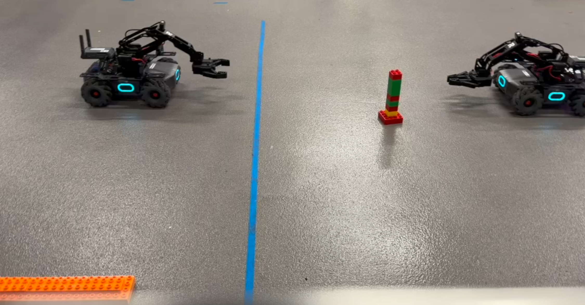
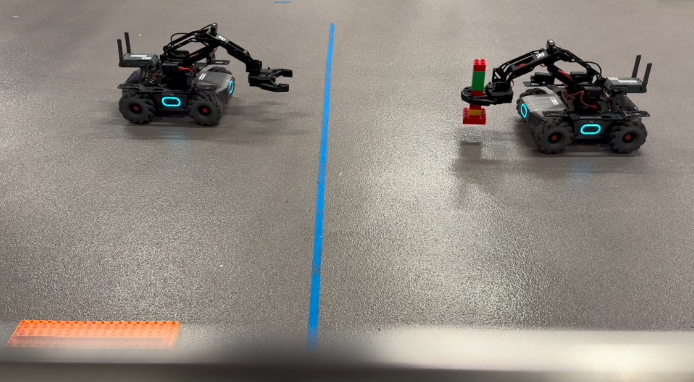
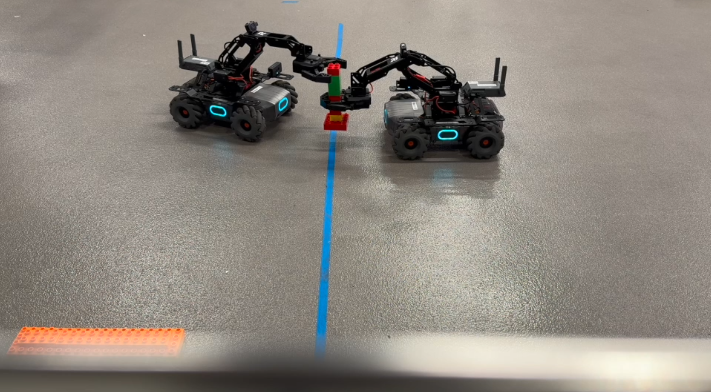
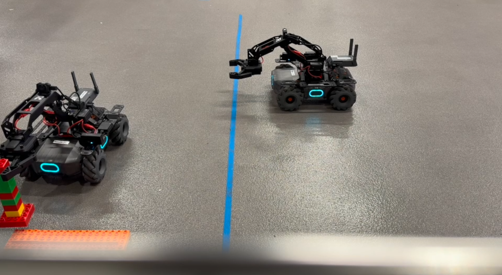

Lego Pass
Overview
The goal of our Robotics Perception and Planning class was to program two robots to autonomously hand Legos to each other while avoiding obstacles. Robot 1 was tasked with picking up a Lego, navigating to the blue line, and coordinating a handoff with Robot 2, which would then transport the Lego to the goal. To accomplish this, both robots relied on object detection, line detection, AprilTag-based localization, and path planning. They needed to perceive their environment and identify obstacles, other robots, and Legos using a Computer vision model trained on a dataset our team collected with ML. Additionally, the robots communicated with each other using TCP and ZeroMQ to ensure synchronized and reliable transfer.
- insert problem layout img
Architecture
Localization and Path Planning (Lab 1):
- The robot uses a map of the environment and AprilTags as landmarks.
- Shortest-path algorithms (UCS/Dijkstra) guide the robot toward checkpoints, avoiding obstacles by generating a graph with weighted edges corresponding to obstacle locations.
- Drive commands are executed using drive_speed() for precise directional control while continuously verifying location via camera-based tag detection.
Lego Detection and Pickup (Lab 2):
- A trained YOLOv8 model identifies Legos and other robots.
- Bounding boxes provide position and orientation data for arm manipulation.
- OpenCV isolates the blue line, enabling Robot 1 to align perpendicular to the line and position the Lego for handoff.
Obstacle Detection and Visual Odometry (Final Project):
- Infrared and camera-based sensors detect obstacles, including random U-shaped barriers around Legos.
- Visual odometry is integrated to track robot motion relative to the environment while avoiding collisions.
- Robots adjust their trajectory dynamically, retracing or rerouting as needed to navigate safely.
{kind=link}
Starting from a defined start position, the robot locates Legos relative to that point. After picking up a Lego , the infrared sensor aids in avoiding obstacles while navigating toward the blue line. Once near the line, Lab 2 code detects its position and orientation, allowing the robot to deposit the Lego on the other side. The robot then retraces its path to repeat the process.
The second robot follows a similar procedure: avoiding obstacles with its infrared sensor, detecting the blue line, identifying a Lego, picking it up using Lab 2 code, and planning a path to deposit it at the goal. This process repeats as additional Legos become available.
We considered expanding our training dataset to identify labeled boxes. This approach was likely to work, since navigation toward Legos was already successful. However, labeling additional data was time-consuming and impractical given the project timeline.
Apriltag Identification
Derive Camera position and orientation from apriltags of known size.
Line Detection
Shortest Path
ZeroMQ
To coordinate handoff, the following structure is used with ZeroMQ:
- Robot 1 (REQ) → sends “Reached line” → Robot 2 (REP)
- Robot 2 (REP) → replies “Release” → Robot 1 (REQ)
- Robot 1 → releases Lego → Robot 2
Socket Setup:
Robot 1 and 2 initiates communication by creating a request socket and connecting to the server laptop hosting the reply socket.
Show code
import zmq
context = zmq.Context()
# create socket
# server laptop ip addr
SERVER_ADDR = ""
print("Connecting to communication server…")
socket = context.socket(zmq.REQ)
socket.connect(SERVER_ADDR)Robot 1: Passing robot
Robot 1 is responsible for delivering the Lego to the blue line and releasing it once Robot 2 confirms it has arrived. After reaching the handoff location, Robot 1 sends a synchronization message and blocks until a reply is received. Only then does it release the Lego.
Show code
# release lego once other robot has arrived
socket.send(b"Reached line")
# wait on reply
message = socket.recv()
print("Received reply [ %s ]" % message)
# release after short wait
time.sleep(3)
ep_gripper.open(power=50)
time.sleep(1)
ep_gripper.pause()
ep_robot.close()
breakRobot 2: Receiving Robot
Robot 2 waits for Robot 1’s signal before attempting to retrieve the Lego. Upon receiving the message, it marks the handoff state as active and begins searching for the Lego to complete the transfer.
Show code
message = socket.recv()
print("Received request: %s" % message)
startMsgReceived = TrueOnce the synchronization message has been received, Robot 2 proceeds with detection and pickup logic.
# search either for lego or robot
if name == 'lego' and startMsgReceived:
print("x: {}, y: {}".format(x, y))
print("Width of Box: {}, Height of Box: {}".format(w, h))
print("Distance: " + str(distance_from_box_size(w, h)))
print("Detected object: ", name)
## rest of code executes handoffResults
This lab presented significant challenges due to the dynamic field and multiple variables, including obstacles and opponent robots. The team implemented logic to prevent collisions and adapted most of the Lab 2 code to accommodate the new constraints.
The robots successfully passed Legos from one side of the field to the other asynchronously. Infrared sensors enabled navigation around randomly placed obstacles, and the integration of previous Lab 2 functionality with new path-planning and obstacle-avoidance logic allowed consistent performance across the field.
Lego Sequence
   